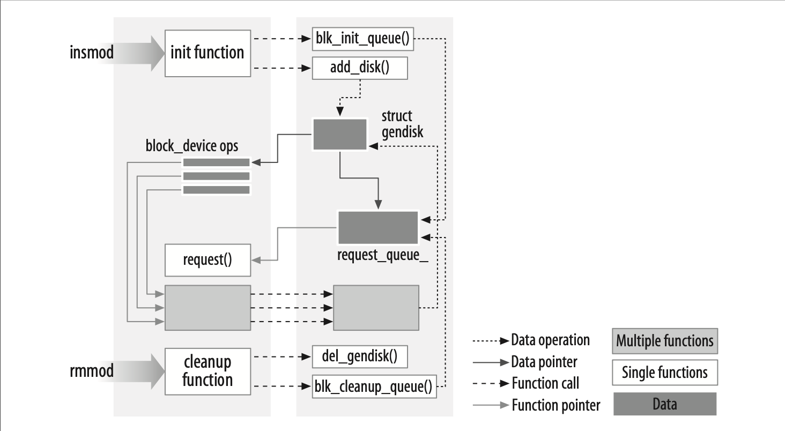

内核模块与应用程序的对比
在继续之前，有必要强调一下内核模块与应用程序之间的几个关键区别。
虽然大多数中小型应用程序从头到尾执行一个单一的任务，但每个内核模块的工作方式不同，它只是将自己注册，以便为未来的请求提供服务，并且其初始化函数会立即终止。换句话说，模块的初始化函数的任务是为后续调用模块的函数做准备；就像模块在说：“我在这里，这是我能做的事情。”而模块的退出函数（在例子中是hello_exit）会在模块卸载之前被调用。它应该告诉内核：“我不在了，别再让我做任何事。”这种编程方式类似于事件驱动编程，但并不是所有应用程序都是事件驱动的，而每个内核模块都是。内核代码与事件驱动应用程序之间的另一个主要区别在于退出函数：应用程序在终止时可能不急于释放资源，甚至完全忽略清理工作，而模块的退出函数则必须小心地撤销初始化函数所做的一切，否则那些资源会一直存在，直到系统重启。
顺便提一下，卸载模块的功能是模块化中你会最欣赏的特点之一，因为它能显著缩短开发时间；你可以在不经过繁琐的关机/重启过程的情况下测试新驱动的多个版本。
作为程序员，你知道应用程序可以调用它没有定义的函数：链接阶段会通过适当的函数库解决外部引用。printf就是这样的一个可调用函数，它在libc中定义。另一方面，模块只与内核链接，它能调用的函数只能是内核导出的函数；没有库可以链接。例如，在之前的hello.c中使用的printk函数就是在内核中定义并导出给模块的printf版本。它的行为与原始函数类似，有一些小的差别，主要是没有对浮点数的支持。
图2-1展示了如何在模块中使用函数调用和函数指针为正在运行的内核添加新功能。
 图2-1 将链接模块到内核中
由于没有库链接到模块中，因此源文件通常不应包含常见的头文件，如<stdarg.h>，只有在极特殊的情况下才会例外。只有实际上属于内核本身的函数才可以在内核模块中使用。与内核相关的内容都在你配置的内核源代码树中的头文件中声明；大部分相关的头文件位于include/linux和include/asm目录下，其他子目录则包含与特定内核子系统相关的材料。
每个内核头文件的作用将在书中随着需要逐步介绍。
内核编程与应用程序编程的另一个重要区别在于它们如何处理错误：在应用程序开发中，段错误通常无害，调试器可以用来追踪源代码中的问题，而内核错误则会导致当前进程崩溃，甚至可能使整个系统崩溃。我们将在第4章讨论如何追踪内核错误。
用户空间与内核空间
模块在内核空间中运行，而应用程序则在用户空间中运行。这一概念是操作系统理论的基础。
操作系统的作用，实际上，是为程序提供一个一致的硬件视图。此外，操作系统还必须确保程序的独立运行，并保护资源免受未授权的访问。只有在CPU能够强制执行系统软件与应用程序之间的保护时，这一复杂任务才有可能实现。
现代处理器都能够实现这种行为。实现这一功能的方式是将不同的操作模式（或称为级别）集成到CPU本身中。这些级别具有不同的作用，一些操作在较低的级别是被禁止的；程序代码只能通过有限的入口点从一个级别切换到另一个级别。Unix系统设计时就利用了这一硬件特性，使用了两个操作级别。所有现代处理器至少有两个保护级别，有些处理器（如x86架构）有更多级别；当多个级别存在时，最高和最低级别会被使用。在Unix系统中，内核在最高级别（也称为超级模式）中执行，允许所有操作，而应用程序则在最低级别（即用户模式）中执行，处理器在该模式下限制直接访问硬件并防止未经授权访问内存。
我们通常将这两种执行模式称为内核空间和用户空间。这些术语不仅涵盖了两种模式内在的不同特权级别，还包括每种模式可能拥有自己内存映射的事实——也就是说，它们有各自的地址空间。
当应用程序发出系统调用或被硬件中断挂起时，Unix系统会将执行从用户空间转移到内核空间。执行系统调用的内核代码是在进程的上下文中运行的——它代表调用进程操作，并能够访问该进程的地址空间中的数据。另一方面，处理中断的代码则与进程是异步的，并且与任何特定进程无关。
模块的作用是扩展内核功能；模块化代码在内核空间中运行。通常，驱动程序同时执行前述的两项任务：模块中的一些函数作为系统调用的一部分执行，另一些则负责中断处理。
内核中的并发
内核编程与传统应用程序编程的一个显著区别在于并发问题。大多数应用程序（除了多线程应用程序外）通常是顺序执行的，从头到尾，不需要担心环境中发生的其他变化。内核代码并不像这样在一个简单的世界中运行，即使是最简单的内核模块，也必须以“可能同时发生许多事情”的思维方式来编写。
内核编程中的并发源有几个。首先，Linux系统运行多个进程，其中多个进程可能会同时尝试使用你的驱动程序。大多数设备能够中断处理器；中断处理程序是异步运行的，并且可能在你的驱动程序尝试执行其他操作时被调用。还有一些软件抽象（例如，第七章介绍的内核定时器）也是异步运行的。当然，Linux也可以在对称多处理器（SMP）系统上运行，这意味着你的驱动程序可能会在多个CPU上并发执行。最后，在2.6版本中，内核代码已经变得可抢占；这一变化使得即使在单处理器系统上，也会面临许多与多处理器系统类似的并发问题。
因此，Linux内核代码，包括驱动程序代码，必须是可重入的——即它必须能够在多个上下文中同时运行。数据结构必须小心设计，以确保多个执行线程之间的隔离，并且代码必须注意以防止数据损坏的方式访问共享数据。
编写能够处理并发并避免竞争条件（即不幸的执行顺序导致不良行为的情况）的代码需要深思熟虑，且可能很棘手。正确的并发管理是编写正确内核代码的必要条件；因此，本书中的每个示例驱动程序都在编写时考虑了并发问题。使用的技术将在我们讨论时一一解释；第五章专门讲解了并发问题以及内核中用于并发管理的原语。
驱动程序编程员常犯的一个错误是认为，只要某段代码没有进入睡眠（或“阻塞”）状态，并发就不是问题。即使在以前的内核版本中（当时还没有抢占机制），这种假设在多处理器系统中也是不成立的。在2.6版本中，内核代码几乎不能假设它可以在某段代码的执行过程中占用处理器。如果你在编写代码时没有考虑并发，它将面临灾难性的失败，这些失败可能非常难以调试。
当前进程
尽管内核模块不像应用程序那样顺序执行，但内核执行的大多数操作都是代表特定进程进行的。内核代码可以通过访问全局变量current来引用当前进程，该变量在<asm/current.h>中定义，它指向一个struct task_struct结构体，该结构体在<linux/sched.h>中定义。current指针指向当前正在执行的进程。在执行系统调用时，比如open或read，当前进程就是发起调用的进程。如果需要，内核代码可以使用current来获取与进程相关的信息。第六章中会介绍一个使用这种技术的例子。
实际上，current并不是一个真正的全局变量。为了支持SMP（对称多处理器）系统，内核开发者不得不开发一种机制，以便在相关的CPU上查找当前进程。这个机制必须非常高效，因为对current的引用是频繁发生的。最终，结果是一个依赖于架构的机制，它通常隐藏了指向task_struct结构体的指针，该指针存储在内核栈上。尽管该实现的细节对其他内核子系统是隐藏的，但设备驱动程序只需包含<linux/sched.h>，并引用当前进程。例如，以下语句通过访问task_struct中的某些字段，打印当前进程的进程ID和命令名称：
printk(KERN_INFO "The process is \"%s\" (pid %i)\n",
current->comm, current->pid);
current->comm中存储的命令名称是当前进程执行的程序文件的基本名称（如果需要，会被修剪为15个字符）。
一些其他细节
内核编程与用户空间编程有许多不同之处。我们会在本书的后续内容中逐步指出这些差异，但有一些基本问题，尽管它们不需要单独成章，但值得提及。因此，当你深入了解内核时，以下问题需要牢记。
应用程序在虚拟内存中布局时，通常会有一个非常大的栈区域。栈用于保存函数调用历史和当前活动函数创建的所有自动变量。而内核则有一个非常小的栈；它可能小到只有一个4096字节的页面。你的函数必须与整个内核空间的调用链共享这个栈。因此，声明大的自动变量并不是一个好主意；如果需要较大的结构体，应在调用时动态分配它们。
在查看内核API时，你会经常遇到以双下划线（__）开头的函数名。带有双下划线的函数通常是接口的低级组件，应谨慎使用。实际上，双下划线告诉程序员：“如果调用这个函数，请确保你知道自己在做什么。”
内核代码不能进行浮点运算。启用浮点运算需要在每次进入和退出内核空间时保存和恢复浮点处理器的状态——至少在某些架构上是这样。考虑到内核代码中实际上没有浮点运算的必要，这样的额外开销是不值得的。